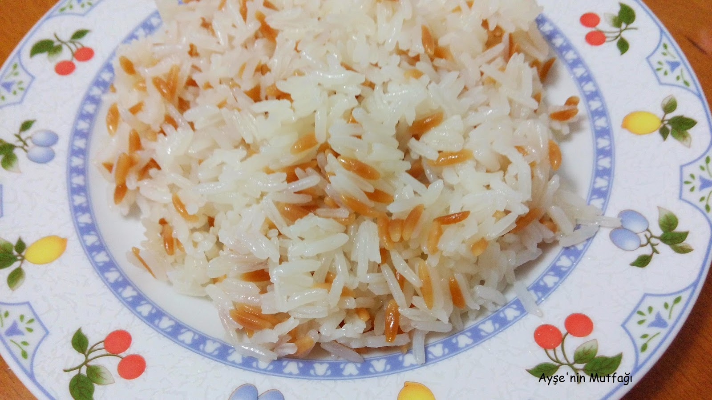
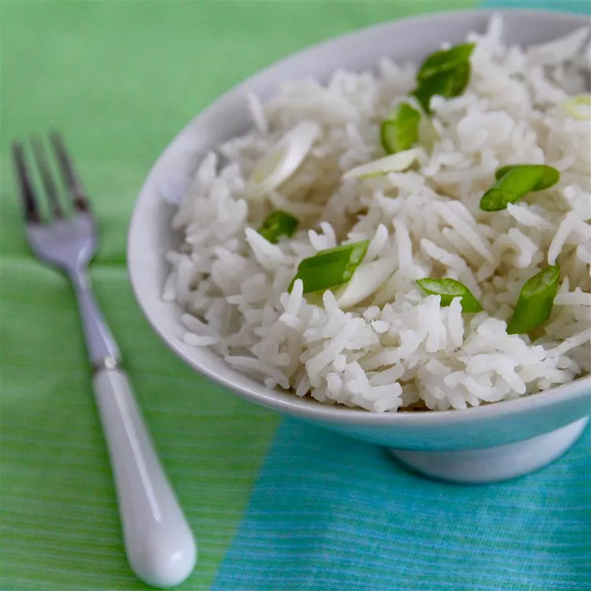

Pilav Recipe

Description
Pilaf, pilav or pilau is a rice dish, usually sautéed, or in some regions,
a wheat dish, whose recipe usually involves cooking in stock or broth,
adding spices, and other ingredients such as vegetables or meat,
and employing some technique for achieving cooked grains that do not adhere to
each other.
Pilaf and similar dishes are common to Middle Eastern, West Asian, Balkan,
Caribbean, South Caucasian, Central Asian, East African, Eastern European,
Latin American, Maritime Southeast Asia, and South Asian cuisines; in these
areas, they are regarded as staple dishes.
Ingredients
- 2 tablespoons butter
- 2 tablespoons olive oil
- ½ medium onion, chopped
- 2 cups long-grain white rice
- 3 cups chicken stock
- 1½ teaspoons salt
- ¼ teaspoon cayenne pepper
- Optional
Steps
-
Preheat the oven to 350 degrees F (175 degrees C).
-
Melt butter and oil in a large saucepan over medium heat. Add onion; cook
and stir until lightly browned, 7 to 8 minutes. Remove from the heat.
-
Place rice into a 9x13-inch casserole dish. Add onion and stir until rice is
thoroughly coated. Place the dish on a baking sheet.
-
Combine chicken stock, salt, cayenne pepper, and saffron in a saucepan.
Bring to a boil, then reduce the heat to low and simmer for 5 minutes.
-
Pour stock mixture over rice in the baking dish and stir to combine.
Spread mixture evenly along the bottom of the pan and cover tightly with
heavy-duty aluminum foil.
-
Bake in the preheated oven for 35 minutes. Remove from the oven and allow
to rest, covered, for 10 minutes. Remove the foil and fluff rice with a
fork.

Nutrition
- 312 Calories
- 9g Fat
- 52g Carbs
- 5g Protein
Homepage